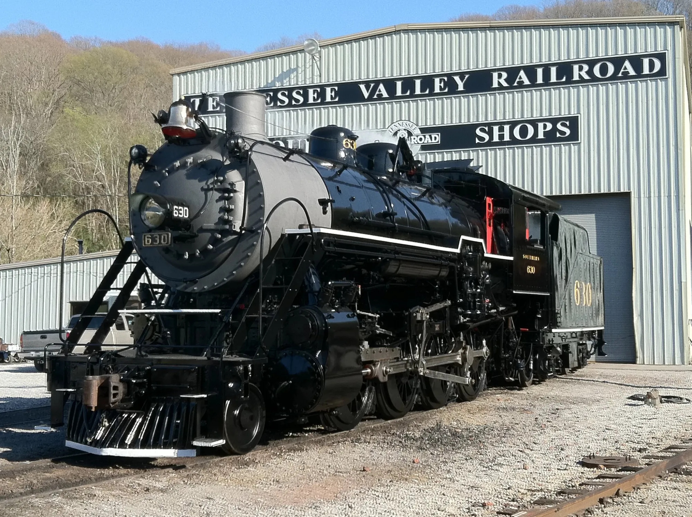
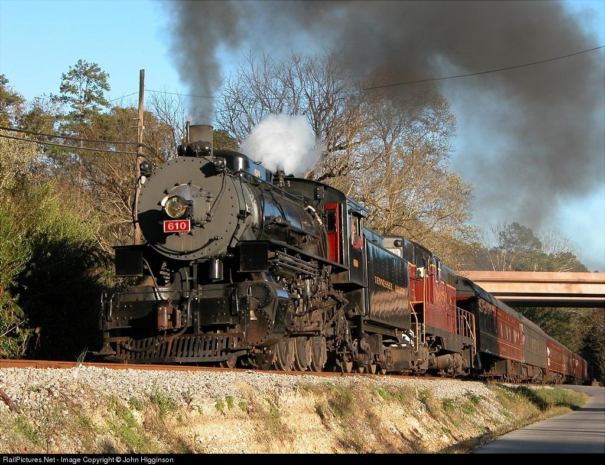

The Main Steam Power of the Tennessee Valley Railroad
Throughout the years the steam power of the Tennessee Valley Railroad Museum has changed to accomodate the growing needs of the operation. In the 1970s during the early years of operations small tank engine #3 "3 Spot" was utilized. The much larger and well known #630 replaced the #3 in 1980, running alongside twin engine #722. In 1990 the smaller #610 took over steam operations for the railroad and in 1994 was joined by the world famous Southern #4501 until 1998. #610 remained in operation until 2010 when it was taken out of service. The #630 returned in 2011 and is still operating, and the #4501 joined in 2014 to assist the now much larger TVRM operation. Throughout the 64 years of the Tennessee Valley Railroad Museum steam has been the main draw for tourism.
Operating Steam Locomotives of the Tennessee Valley Railroad
- Southern Wood Preserving Co. 3 | 0-4-0 Tank | Built ALCo 1923
- Southern Railway 630 | 2-8-0 | Built 1904 ALCo
- Southern Railway 722 | 2-8-0 | Built 1904 Baldwin
- U.S. Army 610 | 2-8-0 | Built 1952 Baldwin Lima Hamilton
- Southern Railway 4501 | 2-8-2 | Built 1911 Baldwin
Southern Railway 630 - TVRM's Oldest
Southern Railway 630 is a Ks-1 class 2-8-0 locomotive built in 1904 by the American Locomotive Company (ALCO). The locomotive spent 40 plus years of service in freight and passenger operations, and was briefly retired in the late 1950s. The Southern Railway reacquired both the 630 and sister engine 722 for their excursion program in 1966, and the engines ran for the program until 1980 when both were leased to the Tennessee Valley Railroad Museum for further use. Engine 722 would end up in North Carolina, and the 630 would be donated to the museum in Chattanooga. Going out of service in 1989, the 630 was extensively rebuilt and returned in 2011. The locomotive continues to operate and transports passengers back to the golden age of railroading, offering an authentic historical experience.
Tennessee Valley 610 - The Backbone
Locomotive 610 is a U.S. Army class S160a 2-8-0 Consolidation, and is the only locomotive of its class ever built. Built by the Baldwin Lima Hamilton Company in 1952, it is argued 610 is the last comercially built steam locomotive in the United States. The locomotive was initially intended for use during the Korean War but was never shipped overseas. Instead, it found a new purpose as a training locomotive in Virginia. In the 1980s the locomotive was donated to TVRM, and when operations grew and engine 630 ran short on time, the 610 took over operations. 610 is often regarded as "the backbone" of the TVRM fleet, as it helped to move the museum out of chapter 11 bankruptcy and into a sustainable musuem with growing numbers every year. The 610 ended service in 2010 due to mechanical failure, just 2 days before its mandated 15 year rebuild was due. Currently the 610 sits out of service waiting for an overhaul.
